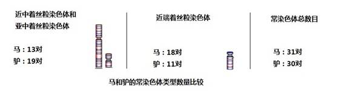

|
九．DNA编码确立了“物种各从其类”
1.
DNA编码是物种分类最可靠的依据。
现代科学已经确认：DNA编码是生命的核心，是生物存储生命遗传信息的唯一载体。显然，DNA编码也是物种分类最可靠的依据。
基于DNA编码识别的亲子鉴定和刑事鉴定，已经被确认无疑。由于DNA编码检测自动化程度越来越高，成本越来越低，使用的范围变得更加广泛。2012年，中国上海国家检疫技术中心的技术人员，提出了一个分辩鳕鱼成分的DNA检测方法。使用这个方法，已经发现了一些以低廉的鱼类冒充高价“鳕鱼”的鱼制商品。2014年9月，又有报道说，中国安徽某大学使用DNA编码检测方法，鉴定出市场上百分之八十的烤羊肉串，使用的都不是羊肉。虽然这仅仅是开始，但是，基于DNA编码检测的物种鉴定方法，必然会成为未来物种分类和鉴别的主流方法，它比通过形态学的特征来识别物种，具有更高的准确性和权威性。
让我们看一个DNA编码区分物种的实例：
为了使用DNA编码序列去鉴别物种，首要的必须是取得各个物种的基因组DNA编码资料。在这里我们列出人、黑猩猩和猕猴的COI基因DNA编码序列。这是从美国基因银行网站直接取得的资料。下面仅仅列出人、黑猩猩和猕猴各两个样本中的一个样本的序列，详细信息参看本网“附：基因银行的DNA编码资料—人-黑猩猩-猕猴：COI基因DNA编码序列有巨大的差异”。
2个人DNA样本的469个DNA编码序列极其一致 1 aggacggatc agacgaagag gggcgtttgg tattgggtta tggcaggggg ttttatattg 61 ataattgttg tgatgaaatt gatggcccct aagatagagg agacacctgc taggtgtaag 121 gagaagatgg ttaggtctac ggaggctcca gggtgggagt agttccctgc taagggaggg 181 tagactgttc aacctgttcc tgctccggcc tccactatag cagatgcgag caggagtagg 241 agagagggag gtaagagtca gaagcttatg ttgtttatgc ggggaaacgc catatcgggg 301 gcaccgatta ttaggggaac tagtcagttg ccaaagcctc cgattatgat gggtattact 361 atgaagaaga ttattacaaa tgcatgggct gtgacgataa cgttgtagat gtggtcgtta 421 cctagaaggt tgcctggctg gcccagctcg gctcgaataa ggaggctta 2个黑猩猩DNA样本的603个DNA编码序列非常一致（有9个突变） 1 gagtcctggg cacagcccta agtctcctta ttcgggctga actaggccaa ccaggcaacc 61 ttctaggtaa tgaccacatc tacaatgtca tcgtcacagc ccatgcattc gtaataatct 121 tcttcatagt aatgcctatc ataatcggag gctttggcaa ctggctagtc cccttgataa 181 ttggtgcccc cgacatggca ttcccccgca taaacaacat aagcttctga ctcctacccc 241 cttctctcct acttctactt gcatctgcca tagtagaagc cggcgccgga acaggttgaa 301 cagtctaccc tcccttagcg ggaaactact cgcatcctgg agcctccgta gacctaacca 361 tcttctcctt gcatctagca ggcgtctcct ctatcctagg agccattaac ttcatcacaa 421 caattattaa tataaaacct cctgccataa cccaatacca aacacccctc ttcgtctgat 481 ccgtcctaat cacagcagtc ttacttctcc tatccctccc agtcctagct gctggcatca 541 ccatactatt gacagatcgt aacctcaaca ctaccttctt cgatccagcc gggggaggag 601 acc
2个猕猴DNA样本的385个DNA编码序列完全一致 1 tccccgccta aataacataa gcttctgact cctccctcct tctttcctgc tactaatagc 61 atcagccata gtagaagctg gcgctggaac aggttgaaca gtataccccc ctttagcagg 121 aaacttctcc cacccaggag cttccgtaga cctaatcatc ttctccctcc acctggcagg 181 tatttcctct atcctagggg ccatcaactt tattaccact atcatcaaca taaaaccccc 241 cgcaatatcc ctataccaaa cccctttatt tgtctgatcg atcttaatca cagcagtcct 301 tttactcctc tccctaccag tcttagccgc tggcattacc atactgctaa cagaccgcaa 361 cctcaatact accttttttg acccc
从上面列出的三类DNA编码，我们可以作出几个结论：
（1）如本节前面使用P公式分析的那样，人、黑猩猩和猕猴的DNA编码序列，证明各自都有自己的“起始个体”。
（2）虽然这些编码都被认为有着“COI基因”（线粒体细胞色素C氧化基因—cytochrome c oxidase
I, COI gene）的功能，但是，DNA编码序列互不相同。从这3个物种DNA编码序列巨大的差异，可以证明人、黑猩猩和猕猴不是来自共同的“起始个体”。
（3）即使某些基因在不同的物种DNA样本上，有相近的DNA编码序列片段，但是，只要两个物种存在下面任何一个差异：1）染色体（或线粒体）长度的差异；2）染色体着丝粒位置的差异；3）基因在染色体（或线粒体）位置上的差异；4）染色体数目的差异，就说明这些物种不是来源于同一个“起始个体”。这个结论的依据，是因为染色体在遗传中有非常高的恒定性。而染色体的恒定性，又是基于DNA编码序列复制的精确性。
基于DNA编码的物种起源学说，并不考虑基因DNA编码的生物学因素，而仅仅将它们作为普通DNA编码序列对待。正如上面人、黑猩猩和猕猴的DNA编码序列，在DNA编码比较上，只从数学分析去看相互联系的概率，并不顾及DNA编码生物学和医学的因素。
2. 从DNA编码和解码上看生殖的隔离
（1）生物学上物种生殖隔离的事实
生物学指出“由于各方面的原因，使亲缘关系接近的类群之间在自然条件下不交配，即使能交配也不能产生后代或不能产生可育性后代的隔离机制，便称为生殖隔离。”
同时指出：“如果两个生物体的交配可以发生在减数分裂，并可以生产可育性的后代，则这两个生物是相同物种的成员。”
这两个原则的确可以用来划分物种。只是这两个物种被看作“亲缘关系接近”，则是从进化论的角度来看的。上述人、黑猩猩和猕猴，从进化论来看，很可能认为“亲缘关系接近”，但是，从DNA编码序列比较来看，三者之间的“亲缘关系”可能性的概率为零。
依据“DNA编码是生命的核心，是生物存储生命遗传信息的唯一载体。”这一原则，让我们从DNA编码上来看“物种生殖隔离”。
（2）减数分裂是实现生殖隔离的关键
如果没有生殖隔离，在自然界就会形成更多的各式各样的物种：可能有介与马和驴之间的骡子种群；可能有介与狮子和老虎之间的狮虎种群；可能有介与黑猩猩和猕猴之间的种群；甚至可能有介与人和黑猩猩之间的种群等等。是什么在执行着生殖
隔离呢？
让我们从骡子的染色体开始这个讨论。骡子是马和驴交配产生的，通常是由人有意地“促使”公马与母驴或者公驴和母马交配形成的后代。骡子具有驴的负重能力，又有马的奔跑能力，是非 常好的役畜，遗憾的是，公骡子和母骡子无法形成骡子后代。这是为什么？几千年来一直是个谜。
直到在显微镜下能够看到细胞核中的染色体后，才逐渐看到其中的缘由，这就是马和驴有不同的染色体条数：马有64条染色体，驴有62条染色体。仅仅是因为这样吗？狮子和老虎都是38条染色体，为什么狮子和老虎的后代“狮虎”不能产生“狮虎”的种群？
我们可以从显微镜下的染色体找到解答。
下面是显微镜下一个母骡子（由马爸爸和驴妈妈生的女儿）的染色体照片[注释6]。照片中，有32条（64条之半）来自马爸爸的染色体，它们是马爸爸精子带来的产物；同时有31条（62条之半）来自驴妈妈的染色体，它们是驴妈妈卵子带来的产物；在63条染色体最初存在于受精的卵细胞中，然后通过“有丝分裂”（一个细胞分裂出同样的两个细胞）以及细胞分化的作用，最终成为了一匹骡子。

图 10-5母骡子细胞核中的染色体（banded blood lymphocyte metaphase from the mule mother—H是马的X染色体，D是驴的X染色体）
当人们利用更高倍显微镜观察马和驴的染色体时，发现它们的相应编号染色体不但长度不同，而且，染色体着丝粒的位置也不同（着丝粒的意义参看第7节图7-1）。图10-6概括显示它们的差别。

图 10-6 马和驴的常染色体类型、数量比较（没有绘出性染色体X、Y）
图中10-6显示：
马有31对常染色体，其中13对为中部或亚中部着丝点染色体, 18对为近端着丝粒染色体。
驴有30对常染色体，其中19对为中部或亚中部着丝点染色体, 只有11对为近端着丝粒染色体。
可以看到马和驴的染色体，不但数量不同，形状不同，着丝粒位置也不相同，DNA编码差异一定更大了。
在骡子成长的过程中，这63条染色体它们互不连接、独立地存在着。然而，却是63条染色体中的DNA编码，共同指挥着骡子的生长。到底是怎样指挥的，对我们来说仍然是个谜。但是，显然指挥是很成功的，生成出具有爸爸、妈妈双方优点的儿女。
一个杂交出来的女儿（母骡子）体内，并存着马爸爸的32条染色体和驴妈妈的31条染色体。当这个女儿渐渐长大进入到性成熟的阶段，为了生育下一代，产生卵子的时候，问题就来啦。产生卵子和产生精子一样，要通过“减数分裂”的过程（参看第6节，图6-2）。
通常，纯种小马的细胞核在减数分裂过程中，细胞核中的马爸爸1号染色体寻找到马妈妈的1号染色体，它们“牵手”并“绞合”在一起，进行DNA片段交换的“联会过程”。然而，现在母骡子细胞核中的马爸爸的1号染色体只能找到驴妈妈的1号染色体，显然，“联会过程”遇到了困难，甚至无法联会。对于其它染色体，也会遇到同样的情况。更要命的是，马的第31号常染色体还没有可以“牵手”的对象。更增加了“联会”的困难。对于公骡子产生精子的时候，也会有同样的情况。
可以想象，如此的差别，在减数分裂时，相应编号马爸和驴妈的染色体，即使“牵手”成功，也很难“联会”成功。有相同对数的狮子和老虎的杂交后代—狮虎，虽然有相同对数的染色体，由于狮子和老虎的染色体和染色体中的DNA编码存在着大的差别，也不能有后代。
从过去的观察中，得出的结论大体是：极少数可育的成年母骡子与公马或公驴交配可生下后代。母骡和公马回交时所生的后代，不仅在体形外貌上都与马完全相同，还可以生出同样外貌的小马。由此，有人提出了“回归理论”。但要确定这个“回归理论”是否正确，还有待于进行染色体组型和DNA编码分析。
在这里，我们只是要说明：减数分裂是实现生殖隔离的关键，而减数分裂的核心，是相同物种的染色体才能互相联会，产生出正常的后代。这个联会过程，是生殖隔离的核心因素。
（3）从DNA编码去认识生物的历史还刚刚是开始
目前，我们对减数分裂的联会时的细节，依然所知甚少。在那个过程中，父母双方那长长的DNA编码序列，是如何打开缺口，然后将一方的DNA编码片段，交换在对方的DNA编码序列中，然后再闭合缺口。对于这个过程，我们所知仍然十分有限。当我们有了更好的观察手段，从DNA编码的细节上了解了减数分裂的过程，才可能认识“物种生殖隔离”的实质。从DNA编码去认识生物的历史，在生物界还刚刚是开始。
3. 从DNA编码看“生物的变异”
（1）生物学中的“生物的变异”
目前的生物学中,“生物的变异”是这样定义的：亲代与子代之间以及子代的个体之间在形态、结构、生理等方面总是存在着差异的现象。
同时认为“生物的变异”是由于“基因突变”和减数分裂时的“基因片段交换和基因重组”两个因素促成的。结论是“生物变异”为生物进化提供了原材料，促使了物种的进化，产生新的生物类型。并认为不同“玫瑰花的颜色”，是生物变异最好的例证。
这些结论是真的吗？
（2）从DNA编码看“生物的变异”
首先，我们来看，变异促使了人类进化吗？
从DNA编码上来看，的确在每一代人的成长和繁衍中，都存在DNA编码的突变。在减数分裂的联会过程中，也有父系和母系DNA编码的交换。正是这两个因素，使人类在20多万年的历史中，从来没有产生过两个同样的人。即使是同卵双胞胎，在两个受精卵细胞的第一次分裂时，就有突变发生，从DNA上来看，已经是不同的人了。
那么，“亲代与子代”有多大DNA编码的差异呢？子代的个体之间有多大DNA编码的差异呢？因为目前对人类DNA编码的研究，比对其它生物的研究要丰富得多，还是先从人类的DNA编码和数学上来回答。
在第2节中，我们介绍了DNA编码序列复制的准确性，每复制10亿个DNA编码，才会发生一个“错误”，我们可以将它叫做突变。人类生殖过程中，减数分裂的联会，使父母DNA编码序列有很小片段的交换，但是，由于父母亲DNA编码本身极其一致，子女的DNA编码依然保持了和父母的一致性。
从数学上来看，那就是“20几万年来，从一对父母诞生的全世界人，我们的DNA编码序列的差别，仅仅是千分之一。”在第2节中，我们给出了“DNA编码遗传差异减半定律”。由此，我们可以推论：人类的最早父母——科学亚当与科学夏娃，和我们的DNA编码差异只有千分之0.5。如果20几万年换算为一万代时，那么，平均每一代产生的DNA编码差异只有千分之0.5的万分之一（0.5/1000×1/10,000=1/10,000,000），即两千万分之一。
DNA的差异并没有形成人的进化，正如基因组研究首席专家文特尔所说：“种族只是一个社会的概念，而不是一个科学事实。”
那么怎样解释不同颜色的人类和不同颜色的玫瑰呢？从DNA编码来看，那仅仅是控制颜色的极少的DNA编码、甚至是一个编码改变所产生的结果。能够说哪一种颜色的玫瑰更进化吗？能够说哪一种颜色的人更进化吗？
最重要的是全世界人在常染色体、Y染色体和线粒体上，具有许多固有的DNA标记（大量的、极其一致的DNA编码），这是任何随机过程（包含突变和减数分裂）不可能产生的结果。因为随机只能产生差异，决不会将差异改变成一致，一致的DNA编码只可能来自起始的个体─那位科学亚当。
4. 染色体在遗传中的恒定性
一条染色体就是一条DNA编码序列，或者说是一条DNA字符串。在人类漫长的繁衍历史中，染色体中除了千分之一左右的DNA编码，因为突变或减数分裂中的DNA片段交换发生字符的改变外，不会发生其它的改变。因此，不但人类的染色体数目保持不变，各染色体的长度以及其形状也是保持不变的。全世界的人，无论祖居何处，各染色体的长度都是一样的；各染色体的着丝粒位置都是一样的；各基因在染色体的分布也是一样的。正因为如此，减数分裂不会隔离他们，不同肤色的人都能结婚生儿育女，正常的繁衍后代。这也充分地说明，他们不是分别进化来的，他们是出自同一个起始的个体。其他物种也都是如此。
会不会在生殖中发生染色体的变化呢？是会发生，染色体疾病就是这种情况。我们已经讨论过罗伯逊易位的染色体病和22对染色体的人。他们都是病人，因此不可能形成新的物种。
染色体的恒定性是惊人的！前面我们介绍了“普通小麦”，它是三个祖先杂交出来的产品。而三个祖先的42条染色体，在“普通小麦”的细胞核中，共同控制着“普通小麦”的生长。在减数分裂联会时，三个祖先遗传下来的各条相应的染色体，互相“牵手”联会，决不混乱。DNA编码也不互相地转化，不会相互融合。“普通小麦”在几万代、几万亿次的繁衍中，各染色体的编码序列，几乎没有什么改变，充分说明了染色体的恒定性。
染色体的恒定性和DNA编码拷贝中的准确性，保证了物种的恒定，确立了物种的各从其类，否定了物种进化或者改变成另一个物种的可能。
上一页 1
2 3 4 下一页 回主页
|